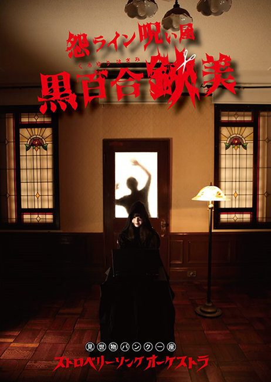
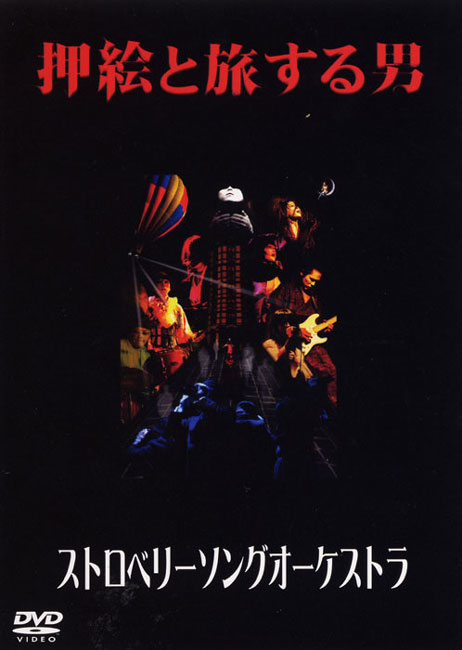

1st DRAMA CD
妄想恋愛譚 ※廃盤
2009.09.30／DOKUCD-007／¥1,500(税込)
CD
01 服喪節
02 献 花
03 弔辞、遺失物
04 僕が居た地図
05 口上、畢生四十九日
06 家族構成
07 見世物小屋にて
08 電波大サーカス
09 覗き見
10 盲目エレジー
11 親父め!!!!
12 藁人形の唄
13 妄想夢芝居
14 告白
15 人形劇～日曜日に於ける家族崩壊図
16 永遠夢寐願望症
17 妄想ハ現実ノ逃避ナノデアル！
18 妄想列車出発
19 彼岸花
1st SPLIT ALBUM
苺楽團と悪魔猫 ※廃盤
2005.03.01／DOKUCD-002／¥1,500(税込)
CD
01 苺楽團と悪魔猫
02 悪魔の父さん
03 憑依奇譚*
04 ニャンコのランチ
05 盲目エレジー*
06 黒猫-The black cat-
07 幸福の黒い鳥*
※Satanyankoとのスプリットアルバム。
ストロベリーソングオーケストラはTrack 03・05・07を収録。

4th DVD
怨ライン呪い屋✂︎黒百合鋏美
2021.4.17／DOKUDV-004／¥5,000(税込)
DVD 
連続ドラマ全7話＋4.59話(ライブ配信)
【特典映像】
團員によるビデオコメンタリー
メイキング映像
2020年秋にYouTubeにて放送された連続ドラマ「怨ライン呪い屋 黒百合鋏美 」を収録
(Disc.1:146min、Disc.2:95min)

2nd DVD
押絵と旅する男 ※廃盤
2007.09.01／DOKUDV-002／¥1,000(税込)
01 遠眼鏡で覗くエチュード
02 ハナ
03 非傀儡宣言
04 病葉(わくらば)
05 一通の手紙
2007年3月に開催された演劇作品
江戸川乱歩原作の 「押絵と旅する男」を収録(70min)
・聴視激エンターテイメント! 3（2004 ※V.A./入手不可）
・DARKER WATERS~deeper into the Japanese underground~（2008 ※V.A./入手不可）
・東京ゲリラ2（2009 ※V.A./入手不可）
・赤い蝶（2005 ※CD-R/入手不可）
・電球論（2007 ※CD-R/入手不可）
・血の軌跡が故の慟哭（2009 ※CD-R/入手不可）
・人力飛行機の為の演説草案（2009 ※CD-R/入手不可）
・包丁ロマンス-包丁の町“殺界”ver-（2010 ※CD-R/入手不可）
・アニマアニムス（2011 ※CD/入手不可）
・Je Couds le Sang（2015 ※CD-R/入手不可）
・Aveugle Elegy（2016 ※CD-R/入手不可）
・ノーカルト≠ノーオカルト（2016 ※CD/入手不可）
・洗脳、怪帰、、デンパ！（2017 ※CD/入手不可）
・包丁トランス～死霊の盆踊り変～（2017 ※CD-R/入手不可）
・盲目エレジー→黄昏便（2017 ※CD-R/入手不可）
・日本暗黒化計画（2018 ※CD-R/入手不可）
・電波障害1000KHz（2003 ※VIDEO/入手不可）
・走るという行為を改めて見直す提議、走レ！（2004 ※VIDEO/入手不可）
・かくれんぼの塔（2008 ※DVD-R/入手不可）
・実録！ 警察官 vs ストロベリーソングオーケストラ（2009 ※DVD-R/入手不可）
・少女地獄（2009 ※DVD-R/入手不可）
・血の濫觴～大空の挿話篇（2009 ※DVD-R/入手不可）
・訃音（2010※DVD-R/入手不可）
・ストロベリーソングオーケストラ初犯行影像(1999.8.13＠難波BEARS)（2017 ※DVD-R/入手不可）
・シン・疫病流行記音（2021 CD-R/入手不可）